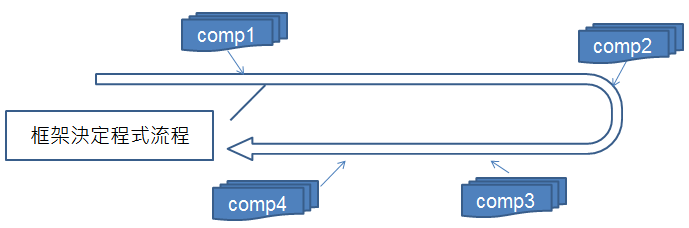

你可以在 Google Play 或 Pubu 購買 Java Tutorial 系列文章的電子書。
Servlet、JSP 是 Java 世界 Web 方案的底層技術，只是要直接用 Servlet、JSP 來建立中大型 Web 應用程式需要比較多的手續，基於快速開發、團隊規範、第三方整合等因素，你可能會選擇使用 Web 框架（Framework），至於什麼是框架？它跟程式庫（Library）有何不同？
在 Python Tutorial 第四堂（1）Django 起步走 中，介紹過框架與程式庫的不同，以下引用一些內容來進行說明：
程式庫 vs 框架
從課程一開始，你就一直在使用程式庫，你的程式流程一直在你的控制之內，你決定了程式何時要使用程式庫來詢問使用者問題、何時要讀取使用者回應、何時要處理結果 …當你開始使用框架，你會發現不是你決定程式流程，你會定義函式，由框架決定何時來呼叫你定義的函式。流程的控制權被反轉了，現在是框架在定義流程，在既定的流程中框架會呼叫你的函式，而不是你來呼叫框架。
IoC（Inversion of Control）
在談到框架時，經常會聽到 IoC 這個縮寫名稱，也就是 Inversion of Control，既控制權反轉，什麼控制權被反轉了？誰能決定程式的流程！使用程式庫的話，流程的控制是這樣的 ...

藍色部份是你可以自行掌控的部份，你決定程式流程走向，並在過程中必要時機，引用各種程式庫！ 使用框架的話，流程的控制是這樣的 …
{kind=link}

藍色部份是你可以自行掌控的部份，也就是框架規範下可進行的元件實作，框架在本身定義的流程下適當時機，會呼叫你的元件實作。
我們需要使用框架嗎？
應用程式開發時是否需要使用框架，有很多考量點 … 然而簡單來說 ... 使用程式庫時，開發者會擁有較高的自由度；使用框架時，開發者會受到較大的限制。限制？有哪些限制？很多 … 是否需要使用框架？是否要遵循框架規範的流程？使用框架是基於技術考量？還是基於商業上的考量？（嗯 ... 因為這框架是採購案中被綁在一起的 ... 上頭叫我們要用我們就得用？）... 這幾個問題都是必須想想看的 ...
股市有句名言，好的老師帶你上天堂，不好的老師帶你住套房。用框架時可以這麼想 … 好的框架帶你上天堂，不好的框架讓你下地獄 ... XD
使用 spring-webmvc 框架
在 Java 的世界中，最不缺少的就是框架，這是 Java 的優點也是缺點，畢竟選擇眾多與太多只是一線之隔。如果你願意，想要使用風格如 Ruby 界的 Rails、Python 界的 Django 等的快速開發框架，在 Java 的世界中也有 Play 這類框架的存在。在這門課程中，選擇使用 spring-webmvc 框架，這是 Spring 框架 的一部份，選擇使用它的原因，是它在 Java 界算是知名度與歡迎度都很高的框架，而且第三方程式庫及框架的整合度高，這篇會先練習使用 spring-webmvc 改寫 Java Tutorial 第三堂（3）使用 Servlet、JSP 開發 Web 應用程式 中的練習 10，後續會持續再基於 spring-webmvc 整合更多的方案。
練習 11：使用 spring-webmvc
在 Lab 檔案的 exercises/exercise11 中有個 SpringMVC 的專案，這其實是練習 10 的成果，只不過目錄名稱改為 SpringMVC 了，請開啟其中的 build.gradle，在
dependencies { ... } 中加入 compile 'org.springframework:spring-webmvc:4.0.0.RELEASE'：
dependencies {
compile 'org.springframework:spring-webmvc:4.0.0.RELEASE'
...
}在 src/main/webapp 中建立 WEB-INF 目錄，接著在 WEB-INF 中建立 web.xml 檔案如下：
<?xml version="1.0" encoding="UTF-8"?>
<web-app version="3.0" xmlns="http://java.sun.com/xml/ns/javaee"
xmlns:xsi="http://www.w3.org/2001/XMLSchema-instance"
xsi:schemaLocation="http://java.sun.com/xml/ns/javaee
http://java.sun.com/xml/ns/javaee/web-app_3_0.xsd">
<servlet>
<servlet-name>dispatcher</servlet-name>
<servlet-class>org.springframework.web.servlet.DispatcherServlet</servlet-class>
</servlet>
<servlet-mapping>
<servlet-name>dispatcher</servlet-name>
<url-pattern>/</url-pattern>
</servlet-mapping>
</web-app>這使用了 spring-webmvc 的
DispatcherServlet 接受請求，只要是 URL 以 / 結束的請求，都會交由 DispatcherServlet 處理，依照這邊的設定，DispatcherServlet 預設需要讀取 WEB-INF 中 dispatcher-servlet.xml 設定檔：
<?xml version="1.0" encoding="UTF-8"?>
<beans xmlns="http://www.springframework.org/schema/beans"
xmlns:mvc="http://www.springframework.org/schema/mvc"
xmlns:xsi="http://www.w3.org/2001/XMLSchema-instance"
xmlns:p="http://www.springframework.org/schema/p"
xmlns:context="http://www.springframework.org/schema/context"
xsi:schemaLocation="http://www.springframework.org/schema/beans
http://www.springframework.org/schema/beans/spring-beans-4.0.xsd
http://www.springframework.org/schema/mvc
http://www.springframework.org/schema/mvc/spring-mvc-4.0.xsd
http://www.springframework.org/schema/context
http://www.springframework.org/schema/context/spring-context-4.0.xsd">
<context:component-scan base-package="tw.codedata" />
<mvc:annotation-driven />
<bean class="org.springframework.web.servlet.view.InternalResourceViewResolver"
p:prefix="/"
p:suffix=".jsp"/>
</beans>開頭的 XML 宣告有些嚇人，不過基本上只要複製貼上就可以了，
<context:component-scan base-package="tw.codedata" /> 告訴 spring-webmvc，要掃描 tw.codedata 套件下，是否有被相關標註（Annotation）設定為元件的類別，這樣的話，你就不用寫一堆 XML 設定檔，對於快速開發會有所助益；<mvc:annotation-driven /> 則是告訴 spring-webmvc，有關於接受、處理請求的元件，也會使用標註來設定相關訊息。
就這個範例來說，
InternalResourceViewResolver 的設定不是必要的，如果沒設，處理請求的元件就必須以字串告知 spring-webmvc，接下來由哪個 URL 組織畫面進行回應，也就是你必須傳回如 "hello.jsp" 這樣的字串，這樣會比較沒有彈性，如上設定 InternalResourceViewResolver 的話，你只要傳回 "hello" 字串，InternalResourceViewResolver 會自動根據 prefix 與 suffix 設定，得知目前實際上要以 "/hello.jsp" 來進行畫面回應，將來若想要改為其他回應技術，就只需要修改 XML 檔案。
接下來修改 src/main/java/tw/codedata 目錄中的 HelloWorld.java 如下：
package tw.codedata;
import org.springframework.stereotype.Controller;
import org.springframework.ui.Model;
import org.springframework.web.bind.annotation.*;
@Controller
public class HelloWorld {
@RequestMapping("hello")
public String hello(@RequestParam("user") String user, Model m) {
m.addAttribute("user", user);
return "hello";
}
}spring-webmvc 是個支援 MVC 流程架構的框架，在 MVC 中，請求是由控制器接受，spring-webmvc 的實作上，可以用
@Controller 標示擔任控制器的類別，至於 URL 對應，則使用 @RequestMapping，這邊的設定表示 "/hello" 的請求會由 hello 方法處理。如果有請求參數，方法上可使用
@RequestParam 標註哪個請求參數指定給哪個方法參數，Model 參數用來攜帶回應頁面要用到的資料，屬性名稱設定為 "user" 時，在 JSP 中可使用 ${user} 來取得，方法最後傳回 "hello"，根據先前 InternalResourceViewResolver 的設定，回應的頁面將會是 "/hello.jsp"。
完成以上相關設定與程式碼撰寫之後，接著執行
gradle tomcatRunWar 指令，開啟瀏覽器請求 http://localhost:8080/SpringMVC/hello?user=CodeData 你應該要能看到以下畫面：{kind=link}
還記得 Java Tutorial 第三堂（2）中使用過 spring-jdbc 存取資料庫嗎？下一篇文章，將會使用 Spring 的相依注入（Dependency Injection）來進行整合。